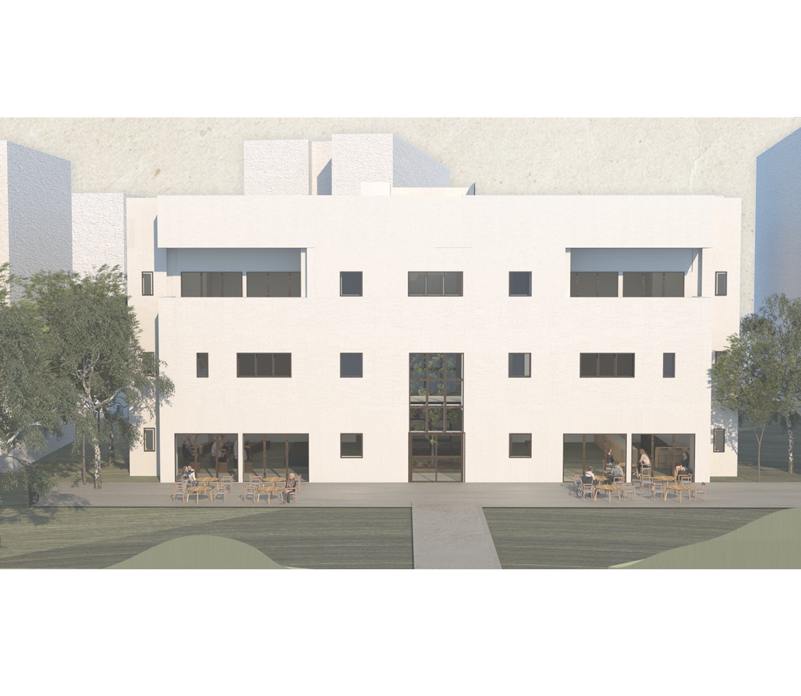
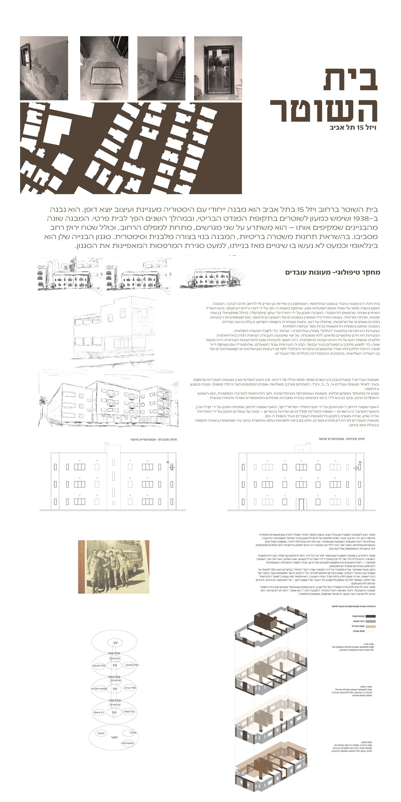
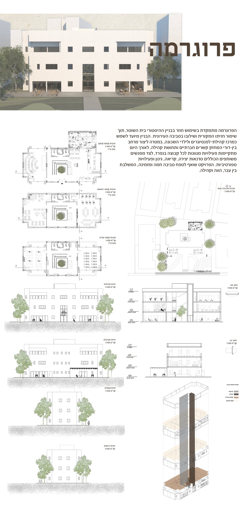
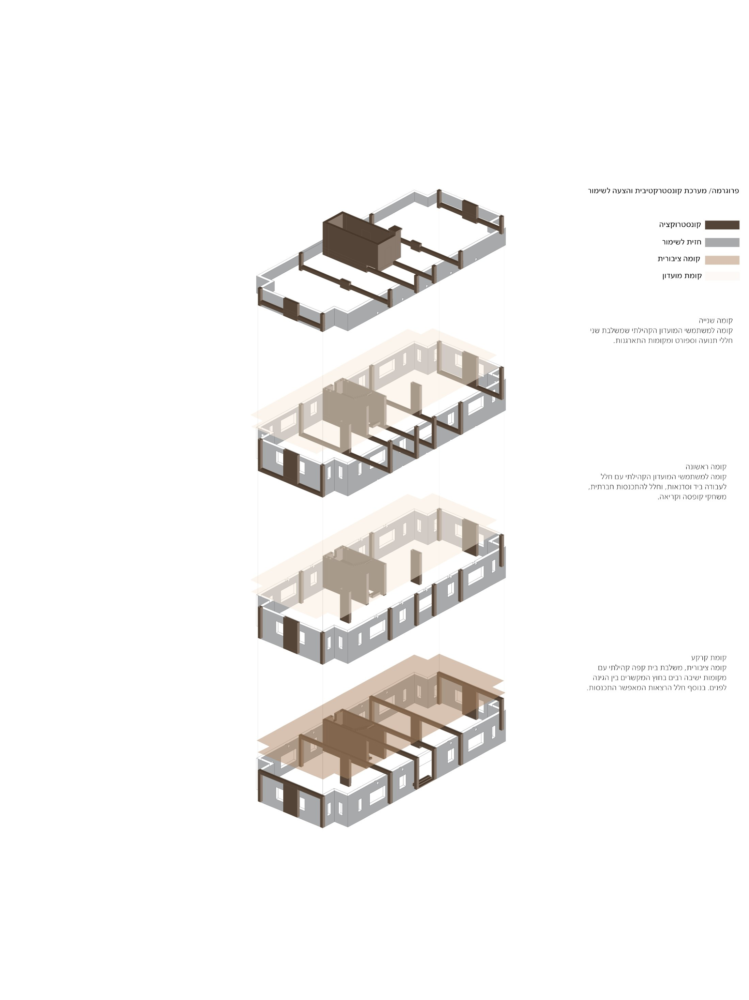

Project 05
Weisel St. 15
The Police Residence, reimagined

An adaptive reuse project at 15 Weisel Street, Tel Aviv, within the former Police Residence, a building first constructed from a British Mandate architectural plan that served military personnel and later housed police officers. Part of a broader typology of workers' residences that shaped early Tel Aviv, it stands today as a valued historical landmark, preserving the stories of its inhabitants and the city itself.
Situated across two plots and partially embedded below street level, the site reflects the neighbourhood's transformation from agricultural orchards into a dense urban fabric. The project approaches the existing structure as both an architectural artifact and a vessel of collective memory.
The proposed program reimagines the building as an intergenerational community centre for retirees and local children. Through creative workshops, reading spaces, gardening, and shared social areas, the design encourages meaningful encounters between generations and strengthens community ties. Contemporary uses are introduced within a preserved historical framework, a dialogue between past and present that lets the building's story continue through everyday life and human connection.


